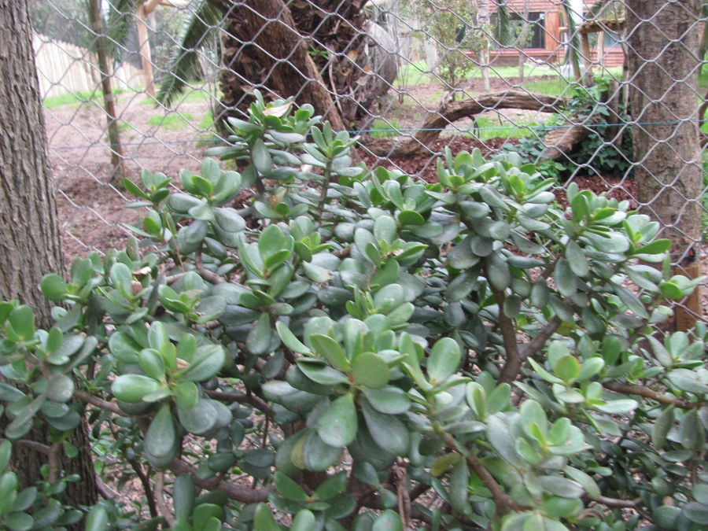

多肉植物 · 植物界
玉树 Crassula ovata

景天科青锁龙属肉质灌木，叶片圆润如玉，老桩苍劲古朴，寓意吉祥，是常见的室内盆景多肉，原产南非。
- 分类
- 门被子植物门纲木兰纲目虎耳草目科景天科属青锁龙属
- 栖息环境
- 南非东开普省的干旱灌丛与石质坡地，喜光、耐旱
- 地理分布
- 原产南非，世界各地广泛盆栽，中国各地常见
- 保护级别
- 暂无评估
物种志
玉树为景天科青锁龙属常绿肉质灌木，株高 0.5–1.5 米，盆栽可长成小树状，茎干粗壮、老枝木质化。叶片对生，椭圆形，长 3–5 厘米，肉质肥厚，表面光滑、深绿色，边缘常带红边。花小，白色或淡粉色，星形，花期冬末春初；果实为蓇葖果。
玉树原产南非的干旱地区，喜温暖、阳光充足和干燥的环境，耐旱怕涝，不耐寒，冬季需保持在 5℃ 以上。它的枝叶肥厚储水能力强，盆土干透后再浇水即可，浇水过多容易烂根落叶。玉树生长缓慢，多年养护可形成苍劲的老桩，民间视为吉祥植物，常作盆景摆放；叶片扦插和枝插都容易成活，繁殖简单；冬季低温时应减少浇水，避免根系受冻。
形态与习性
- 株高0.5–1.5 米，老枝木质化
- 花期冬末春初，花小，白色或淡粉色
- 果期花后结蓇葖果
- 光照喜充足阳光，夏季适度遮阴
- 水分耐旱，盆土干透再浇，忌积水
- 土壤疏松透气、排水良好的沙壤土
- 繁殖枝插、叶插
- 主要用途室内盆景、阳台观赏
趣味知识
- 玉树老枝木质化后可长成小树状，多年养护能形成苍劲的老桩盆景。
- 叶片肥厚多汁，储水能力强，盆土干透再浇水更安全。
- 光照充足、温差较大时，叶片边缘会泛出红边。
- 玉树与“发财树”并非同种，前者是多肉植物，后者是锦葵科乔木。